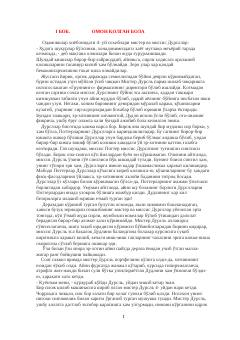

GPSehrgar bola Garrining Xogvarts maktabidagi ilk sarguzashtlari boshlanishi.
Garri Potter ismli yetim bola o'zining sehrgar ekanligini bilib oladi va Xogvarts sehrgarlik maktabiga o'qishga boradi. U yerda u o'zining o'tmishi va ota-onasining o'limi ortidagi sirli voqealar bilan to'qnash keladi. Bu sehrli olamga kirish qismi bo'lib, Garri va uning do'stlarining ilk sarguzashtlarini hikoya qiladi.